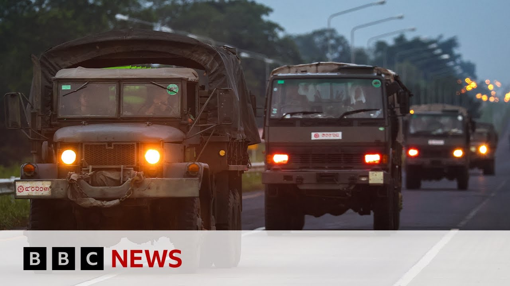

【BBC News 20250728 泰国和柬埔寨同意在马来西亚举行停战会谈】
Summary: Cambodia welcomes Trump's ceasefire proposal, Thailand considers dialogue first, but shelling continues amid US tariff pressure. Both sides face economic stakes as trade deadline nears.
摘要： 柬埔寨欢迎特朗普的停火提议，泰国坚持先对话，但炮击在美国关税压力下持续。随着贸易截止日期临近，双方都面临经济风险。

⏱️ Estimated Reading Time: 5 min.
📚 四级生词 📚 六级生词 📚 雅思生词 📚 托福生词 📚 专八生词 📚 SAT生词 📚 考研生词 📚 GRE生词 📚 高考生词 📚 其它生词
Cambodia has welcomed a proposal by President Trump for a ceasefire with Thailand after days of crossber fighting.
柬埔寨对特朗普总统提出的与泰国停火的提议表示欢迎，此前双方已交火数日。
Thailand said it was willing to consider a ceasefire, but that dialogue must come first.
泰国表示愿意考虑停火，但必须首先进行对话。
Mr. Trump told the leaders of both countries there would be no talks on reducing US tariffs until the fighting stopped.
特朗普告诉两国领导人，在战斗停止之前不会讨论降低美国关税的问题。
Shelling continued overnight after the US president's calls.
美国总统通话后，炮击持续了一整夜。
Our Southeast Asia correspondent Jonathan Head reports from the Thai Cambodian border.
我们的东南亚记者乔纳森·海德从泰柬边境发回报道。
So, could President Trump have more success here in Southeast Asia than he's had so far in Gaza or Ukraine?
那么，特朗普总统在东南亚是否会比在加沙或乌克兰取得更大成功？
The response to his unexpected phone calls to both prime ministers of Cambodia and Thailand has so far been very positive.
他对柬埔寨和泰国总理的意外电话到目前为止反应非常积极。
The Cambodian side um eagerly want a ceasefire.
柬埔寨方面迫切希望停火。
That's President Trump's demand.
这是特朗普总统的要求。
Um Hunmet said you he was very grateful for President Trump's intervention.
洪森表示，他对特朗普总统的干预非常感激。
But remember, Cambodia had already asked for a ceasefire at the UN on Friday.
但别忘了，柬埔寨上周五已在联合国要求停火。
its own military forces are much weaker than Thailand's and we believe they've probably probably been taking a lot of punishment from the relentless Thai artillery barges and air strikes that we've seen over the last three days.
柬埔寨的军事力量远弱于泰国，我们认为他们可能在过去三天里遭受了泰国无情的炮舰和空袭的打击。
On the Thai side, the response is is is positive and warm, but the Thai prime minister said only that they would agree to a ceasefire in principle if they saw good intentions from the Cambodian side.
泰国方面的反应积极而热情，但泰国总理仅表示，如果看到柬埔寨方面的诚意，他们原则上同意停火。
That's actually been the Thai position all along.
这实际上是泰国一贯的立场。
The Thai military and the government do not appear ready for a ceasefire right now.
泰国军方和政府目前似乎并不准备停火。
As far as the Thai military is concerned, they still have unfinished business.
就泰国军方而言，他们仍有未完成的任务。
They're still they still want to push Cambodian forces well back from the border and probably inflict more damage on them.
他们仍希望将柬埔寨军队远远赶出边境，并可能对其造成更多打击。
There's a lot of anger in this country over those rocket attacks on Thursday which killed 13 Thai civilians.
该国对周四造成13名泰国平民死亡的火箭袭击感到愤怒。
Um, and the Thai side has always said what they want is dialogue with Cambodia first before any ceasefire.
泰国方面一直表示，他们希望在停火前首先与柬埔寨对话。
The Thai prime minister reiterated that position um in his response to Donald Trump's phone call.
泰国总理在回应特朗普的电话时重申了这一立场。
So ostensibly um that phone call hasn't changed anything and we have seen uh shelling overnight coming both ways.
表面上，这通电话没有改变任何事，我们看到整夜双方仍在炮击。
We've seen some buildings destroyed here in Thailand.
我们看到泰国这边一些建筑被毁。
We assume the ties have just kept up that ongoing artillery barrage over to the Cambodian side.
我们认为泰国仍在持续向柬埔寨一侧炮击。
Um but the key point in President Trump's uh statement was that he said he also warned both sides that their current trade talks on his tariffs would not go on if there wasn't a ceasefire.
但特朗普声明的关键点是，他警告双方，如果不停火，目前的关税贸易谈判将无法继续。
Now neither country can afford these talks to fail and there's only four days left to the trade tariff deadline.
现在两国都无法承受谈判失败，距离贸易关税截止日期只剩四天。
Uh we know in Thailand there's enormous criticism of the government that they appear to have been slow to get their tariff talks going.
我们知道泰国国内对政府批评声很大，认为他们在关税谈判上行动迟缓。
Both countries, Cambodia and Thailand, are very exposed to the US market.
柬埔寨和泰国都非常依赖美国市场。
They've they're currently facing a 36% tariff.
他们目前面临36%的关税。
Uh many neighboring countries have now done deals that bring those tariffs down to 20% or lower.
许多邻国已达成协议，将关税降至20%或更低。
So, in a way, that threat, I think, will be the deciding factor.
因此，我认为这一威胁将成为决定性因素。
I don't think either Thailand or Cambodia can afford that for those tariff talks to fail and they will comply with Donald Trump's wishes for at least an announcement of a ceasefire probably within the next two days or so.
我认为泰柬两国都无法承受关税谈判失败，他们可能会在未来两天左右按照特朗普的意愿宣布停火。
Our Southeast Asia correspondent, Jonathan Head.
我们的东南亚记者乔纳森·海德。